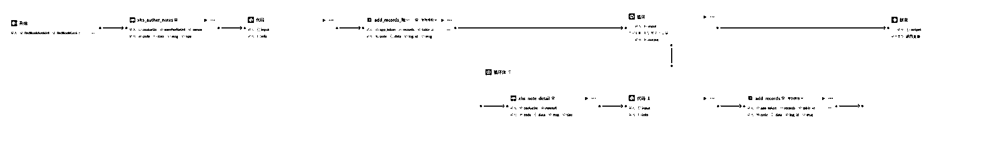
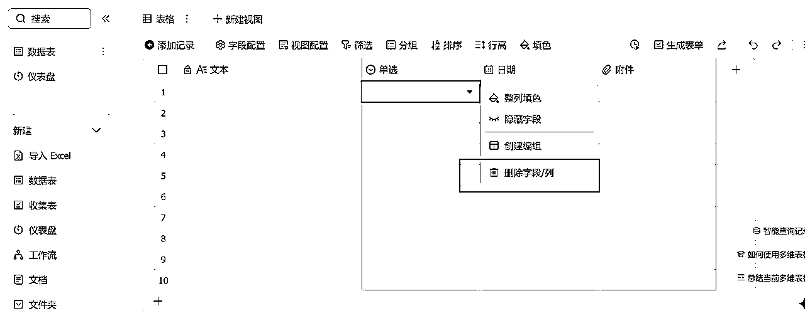

来源：https://uixclcu6udc.feishu.cn/docx/P4wodYFJhoshKUx0APecAzs7nDb
大家好，我是乔今，目前在研究AI提效和私域获客方向。这是我的第3篇文章《AI工作流 | Coze+飞书多维表格抓取小红书作者账号信息及笔记数据》。
对运营稍微了解一点，就会知道分析对标作者账号信息和笔记数据的重要性。踩着巨人的肩膀，搭顺风车，省时省力。
对着对标账号看笔记，看到后面忘了前面。想下载下来，一篇篇扒，手都抽筋了，回头找的时候照样麻爪。
本篇文章就是用来“减负”的！手把手教你怎样输入作者主页网址，直接将作者账号信息、笔记数据自动上传到飞书多维表格，后续不论是拆解选题方向、内容结构、表达方式以及互动策略，或者仿写，都可以在表格中一站式搞定。省下来的时间打场游戏，摸摸鱼，简直不要太开心~
工作流如下所示：

运行结果：
账号数据：
笔记数据：
本篇文档分为三个部分：
1、登录飞书网址=》新建=》多维表格=》新建多维表格
2、新建数据表即可创建新表。鼠标右键可以修改表名。
3、本文涉及到两个表格，“账号数据”用来存储作者的账号信息，“笔记数据”用来存储作者的每篇笔记数据。
4、“账号数据”表：鼠标左键选中，右键删除后续几列

5、修改列名。鼠标右键，“编辑字段和列”。首行设置如下几列，注意文字不要写错，和后续代码名称保持一致。否则数据无法写入飞书。注意类型都是文本。
6、左上角选中，删除记录，不然会从最后一行开始插入数据。
7、设置权限：
8、这个链接就是下述开始节点中的FeishuToken
9、“笔记数据”设置如下图所示，注意绿框内的字段为文字类型，黄框是链接转附件，可以将url转为图片显示，直接下图搜索框搜索即可：
登录扣子网站=》开发平台=》快速开始=》工作空间(左侧菜单栏) =》资源库=》+资源(右侧最上角)=》工作流 =》填写工作流名称和工作流描述
这里工作流名称设置为：XHSAuthCrawlerCookie
工作流描述设置为：
:::warning
输入小红书笔记链接、小红书Cookie、飞书多维表格链接，抓取小红书博主的所有笔记数据
:::
1、添加节点=》插件
2、搜索名称，得到的一般都是合集。小红书插件合集搜索示例：
3、收藏后，点击添加节点，即可看到已收藏的插件，下次用不需要在插件商店重复搜索了
设置如下：
设置如下：
1、cookieStr：
2、userProfileUrl

设置如下：
输入：input
输出：info
代码如下：切换为python
async def main(args: Args) -> Output:
params = args.params
params = params['input']
# 构建输出对象
records = []
fields = {
"博主昵称": params["nick_name"],
"头像链接": params["avatar"],
"简介": params["desc"],
"粉丝数": params["fans"],
"关注数": params["follows"],
"赞藏数": params["interaction"],
"IP地址": params["ip_location"],
"博主id": params["red_id"],
"主页链接": params["user_link_url"]
}
# 将 fields 转换为 JSON 格式的字符串
record = {"fields": json.dumps(fields, ensure_ascii=False)}
records.append(record)
# 构建最终返回的输出对象
ret = {
"info": records
}
return ret
添加插件：
设置如下：
1、app_token
2、records
设置如下：
1、循环设置：使用数组循环
2、循环数组：input
3、输出：output
设置如下：
1、cookieStr
2、noteUrl
设置如下：
输入：input
输出：info
代码如下：python
async def main(args: Args) -> Output:
params = args.params
params = params["input"]
# 构建输出对象
records = []
fields = {
"标题": params["note_display_title"],
"创建时间": params["note_create_time"],
"封面图片链接": params["note_image_list"][0],
"博主昵称": params["auther_nick_name"],
"文案": params["note_desc"],
"标签": "||".join(params["note_tags"]),
"类型": params["note_card_type"],
"收藏数": int(params["collected_count"]),
"点赞数": int(params["note_liked_count"]),
"分享数": int(params["share_count"]),
"评论数": int(params["comment_count"]),
"视频链接": params["video_h264_url"],
"笔记链接": params["note_url"],
"图片列表": "||".join(params["note_image_list"])
}
# 将 fields 转换为 JSON 格式的字符串
record = {"fields": json.dumps(fields, ensure_ascii=False)}
records.append(record)
# 构建最终返回的输出对象
ret = {
"info": records
}
return ret
设置如下：
1、app_token
2、records
设置如下：

output：
2、随意搜索一个内容

3、鼠标右键，点击检查。或者按一下键盘上的F12也可以
4、点击Network
5、鼠标在左侧小红书瀑布笔记那里，鼠标滚轮一直往下滚动，可以看出Name会出现notes，点击notes，在headers那里会出现cookie，复制即可
4、unread_count也可以
注意事项：cookie有一定的时效性，如果失效，需要重新提取。
1、点击“试运行”
2、FeishuAccountToken
3、FeishuNoteToken
4、RedBookAuthUrl，作者主页链接
5、RedBookCookie
6、填充开始节点变量值
{"type":"coze-workflow-clipboard-data","source":{"workflowId":"7518229660888350760","flowMode":0,"spaceId":"7510842919100809242","isDouyin":false,"host":"www.coze.cn"},"json":{"nodes":[{"id":"177157","type":"4","meta":{"position":{"x":640,"y":13}},"data":{"nodeMeta":{"description":"获取用户【笔记列表】（xhs_auther_notes）\n功能描述： 根据提供的用户首页地址链接和小红书cookie，抓取该用户的所有笔记列表。\n参数：\ncookieStr：小红书的cookie字符串，用于身份验证。\nuserProfileUrl：用户首页的地址链接。\n","icon":"https://p26-flow-product-sign.byteimg.com/tos-cn-i-13w3uml6bg/b1898b6505b7472993ae37794313f9e7~tplv-13w3uml6bg-resize:128:128.image?rk3s=2e2596fd&x-expires=1753068274&x-signature=6d%2B4%2Fu6fA8cHjXLPLRduAj8ZVOc%3D","subtitle":"小红书:xhs_auther_notes","title":"xhs_auther_notes"},"inputs":{"apiParam":[{"input":{"type":"string","value":{"content":"7425907757733330994","rawMeta":{"type":1},"type":"literal"}},"name":"apiID"},{"input":{"type":"string","value":{"content":"xhs_auther_notes","rawMeta":{"type":1},"type":"literal"}},"name":"apiName"},{"input":{"type":"string","value":{"content":"7413268723496190002","rawMeta":{"type":1},"type":"literal"}},"name":"pluginID"},{"input":{"type":"string","value":{"content":"小红书","rawMeta":{"type":1},"type":"literal"}},"name":"pluginName"},{"input":{"type":"string","value":{"content":"","rawMeta":{"type":1},"type":"literal"}},"name":"pluginVersion"},{"input":{"type":"string","value":{"content":"","rawMeta":{"type":1},"type":"literal"}},"name":"tips"},{"input":{"type":"string","value":{"content":"","rawMeta":{"type":1},"type":"literal"}},"name":"outDocLink"}],"inputParameters":[{"name":"cookieStr","input":{"type":"string","value":{"type":"ref","content":{"source":"block-output","blockID":"100001","name":"RedBookCookie"},"rawMeta":{"type":1}}}},{"name":"userProfileUrl","input":{"type":"string","value":{"type":"ref","content":{"source":"block-output","blockID":"100001","name":"RedBookAuthUrl"},"rawMeta":{"type":1}}}}],"settingOnError":{"processType":1,"timeoutMs":180000,"retryTimes":0}},"outputs":[{"type":"integer","name":"code","required":false},{"type":"object","name":"data","schema":[{"type":"string","name":"cursor","required":true},{"type":"boolean","name":"has_more","required":true},{"type":"list","name":"notes","schema":{"type":"object","schema":[{"type":"string","name":"auther_nick_name","required":false},{"type":"string","name":"note_cover_width","required":false},{"type":"string","name":"note_url","required":false},{"type":"string","name":"note_xsec_token","required":false},{"type":"string","name":"auther_avatar","required":false},{"type":"string","name":"auther_user_id","required":false},{"type":"string","name":"note_cover_url_pre","required":false},{"type":"string","name":"note_id","required":false},{"type":"string","name":"auther_home_page_url","required":false},{"type":"string","name":"note_display_title","required":false},{"type":"string","name":"note_liked_count","required":false},{"type":"boolean","name":"note_sticky","required":true},{"type":"string","name":"note_card_type","required":false},{"type":"string","name":"note_cover_height","required":false},{"type":"string","name":"note_cover_url_default","required":false},{"type":"boolean","name":"note_liked","required":false}]},"required":false},{"type":"object","name":"auther_info","schema":[{"type":"string","name":"gender","required":false},{"type":"string","name":"interaction","required":false},{"type":"string","name":"ip_location","required":false},{"type":"string","name":"nick_name","required":false},{"type":"string","name":"red_id","required":false},{"type":"string","name":"avatar","required":false},{"type":"string","name":"fans","required":false},{"type":"string","name":"follows","required":false},{"type":"string","name":"user_link_url","required":false},{"type":"string","name":"desc","required":false},{"type":"list","name":"tags","schema":{"type":"string"},"required":false},{"type":"string","name":"user_id","required":false}],"required":false}],"required":false},{"type":"string","name":"msg","required":false},{"type":"string","name":"tips","required":true}]},"_temp":{"bounds":{"x":460,"y":13,"width":360,"height":112},"externalData":{"icon":"https://lf6-appstore-sign.oceancloudapi.com/ocean-cloud-tos/plugin_icon/517231610969187_1725264473893186047_CDXXehfYsy.png?lk3s=cd508e2b&x-expires=1755150634&x-signature=lDH6TRceUKnCA3RPRubURsLPU5E%3D","apiName":"xhs_auther_notes","pluginID":"7413268723496190002","pluginProductStatus":1,"pluginProductUnlistType":0,"pluginType":1,"spaceID":"7402935100184313883","inputs":[{"description":"小红书 cookie","input":{},"name":"cookieStr","required":true,"type":"string"},{"description":"数据游标","input":{},"name":"cursor","required":false,"type":"string"},{"description":"用户首页地址链接","input":{},"name":"userProfileUrl","required":true,"type":"string"}],"outputs":[{"input":{},"name":"code","required":false,"type":"integer"},{"input":{},"name":"data","required":false,"schema":[{"input":{},"name":"notes","required":false,"schema":{"schema":[{"input":{},"name":"auther_avatar","required":false,"type":"string"},{"input":{},"name":"note_cover_url_default","required":false,"type":"string"},{"input":{},"name":"note_cover_url_pre","required":false,"type":"string"},{"input":{},"name":"note_cover_width","required":false,"type":"string"},{"input":{},"name":"note_display_title","required":false,"type":"string"},{"input":{},"name":"note_xsec_token","required":false,"type":"string"},{"input":{},"name":"auther_user_id","required":false,"type":"string"},{"input":{},"name":"note_card_type","required":false,"type":"string"},{"input":{},"name":"note_cover_height","required":false,"type":"string"},{"input":{},"name":"note_liked","required":false,"type":"boolean"},{"input":{},"name":"note_sticky","required":true,"type":"boolean"},{"input":{},"name":"note_url","required":false,"type":"string"},{"input":{},"name":"auther_home_page_url","required":false,"type":"string"},{"input":{},"name":"note_id","required":false,"type":"string"},{"input":{},"name":"note_liked_count","required":false,"type":"string"},{"input":{},"name":"auther_nick_name","required":false,"type":"string"}],"type":"object"},"type":"list"},{"input":{},"name":"auther_info","required":false,"schema":[{"input":{},"name":"gender","required":false,"type":"string"},{"input":{},"name":"tags","required":false,"schema":{"assistType":0,"type":"string"},"type":"list"},{"input":{},"name":"user_id","required":false,"type":"string"},{"input":{},"name":"user_link_url","required":false,"type":"string"},{"input":{},"name":"ip_location","required":false,"type":"string"},{"input":{},"name":"nick_name","required":false,"type":"string"},{"input":{},"name":"red_id","required":false,"type":"string"},{"input":{},"name":"avatar","required":false,"type":"string"},{"input":{},"name":"desc","required":false,"type":"string"},{"input":{},"name":"fans","required":false,"type":"string"},{"input":{},"name":"follows","required":false,"type":"string"},{"input":{},"name":"interaction","required":false,"type":"string"}],"type":"object"},{"input":{},"name":"cursor","required":true,"type":"string"},{"input":{},"name":"has_more","required":true,"type":"boolean"}],"type":"object"},{"input":{},"name":"msg","required":false,"type":"string"},{"input":{},"name":"tips","required":true,"type":"string"}],"updateTime":1752558364,"channel_id":2,"latestVersionTs":"0","latestVersionName":"","versionName":"","description":"获取用户【笔记列表】（xhs_auther_notes）\n功能描述： 根据提供的用户首页地址链接和小红书cookie，抓取该用户的所有笔记列表。\n参数：\ncookieStr：小红书的cookie字符串，用于身份验证。\nuserProfileUrl：用户首页的地址链接。\n","title":"xhs_auther_notes","mainColor":"#CA61FF"}}},{"id":"155154","type":"5","meta":{"position":{"x":1100,"y":13}},"data":{"nodeMeta":{"description":"编写代码，处理输入变量来生成返回值","icon":"https://lf3-static.bytednsdoc.com/obj/eden-cn/dvsmryvd_avi_dvsm/ljhwZthlaukjlkulzlp/icon/icon-Code-v2.jpg","mainColor":"#00B2B2","subTitle":"代码","title":"代码"},"inputs":{"inputParameters":[{"name":"input","input":{"type":"object","schema":[{"type":"string","name":"gender","required":false},{"type":"string","name":"interaction","required":false},{"type":"string","name":"ip_location","required":false},{"type":"string","name":"nick_name","required":false},{"type":"string","name":"red_id","required":false},{"type":"string","name":"avatar","required":false},{"type":"string","name":"fans","required":false},{"type":"string","name":"follows","required":false},{"type":"string","name":"user_link_url","required":false},{"type":"string","name":"desc","required":false},{"type":"list","name":"tags","schema":{"type":"string"},"required":false},{"type":"string","name":"user_id","required":false}],"value":{"type":"ref","content":{"source":"block-output","blockID":"177157","name":"data.auther_info"},"rawMeta":{"type":6}}}}],"code":"# 在这里，您可以通过 ‘args’ 获取节点中的输入变量，并通过 'ret' 输出结果\n# 'args' 和 'ret' 已经被正确地注入到环境中\n# 下面是一个示例，首先获取节点的全部输入参数params，其次获取其中参数名为‘input’的值：\n# params = args.params; \n# input = params.input;\n# 下面是一个示例，输出一个包含多种数据类型的 'ret' 对象：\n# ret: Output = { \"name\": ‘小明’, \"hobbies\": [“看书”, “旅游”] };\n\nasync def main(args: Args) -> Output:\n params = args.params\n params = params['input']\n\n # 构建输出对象\n records = []\n\n fields = {\n \"博主昵称\": params[\"nick_name\"],\n \"头像链接\": params[\"avatar\"],\n \"简介\": params[\"desc\"],\n \"粉丝数\": params[\"fans\"],\n \"关注数\": params[\"follows\"],\n \"赞藏数\": params[\"interaction\"],\n \"IP地址\": params[\"ip_location\"],\n \"博主id\": params[\"red_id\"],\n \"主页链接\": params[\"user_link_url\"]\n }\n\n # 将 fields 转换为 JSON 格式的字符串\n record = {\"fields\": json.dumps(fields, ensure_ascii=False)}\n records.append(record)\n\n # 构建最终返回的输出对象\n ret = {\n \"info\": records\n }\n\n return ret","language":3,"settingOnError":{"processType":1,"timeoutMs":60000,"retryTimes":0}},"outputs":[{"type":"list","name":"info","schema":{"type":"object","schema":[]}}]},"_temp":{"bounds":{"x":920,"y":13,"width":360,"height":112},"externalData":{"icon":"https://lf3-static.bytednsdoc.com/obj/eden-cn/dvsmryvd_avi_dvsm/ljhwZthlaukjlkulzlp/icon/icon-Code-v2.jpg","description":"编写代码，处理输入变量来生成返回值","title":"代码","mainColor":"#00B2B2"}}},{"id":"161588","type":"4","meta":{"position":{"x":1560,"y":13}},"data":{"nodeMeta":{"description":"在多维表格数据表中新增多条记录，单次调用最多新增 500 条记录。","icon":"https://p6-flow-product-sign.byteimg.com/tos-cn-i-13w3uml6bg/dfc3d7f4eb004d0584aaf47a510beba2~tplv-13w3uml6bg-resize:128:128.image?rk3s=2e2596fd&x-expires=1753069237&x-signature=Vp77knPs%2Bxpvy541HXnkdnxXj20%3D","subtitle":"飞书多维表格:add_records","title":"add_records_账号数据"},"inputs":{"apiParam":[{"input":{"type":"string","value":{"content":"7395047759797288987","rawMeta":{"type":1},"type":"literal"}},"name":"apiID"},{"input":{"type":"string","value":{"content":"add_records","rawMeta":{"type":1},"type":"literal"}},"name":"apiName"},{"input":{"type":"string","value":{"content":"7395047759797272603","rawMeta":{"type":1},"type":"literal"}},"name":"pluginID"},{"input":{"type":"string","value":{"content":"飞书多维表格","rawMeta":{"type":1},"type":"literal"}},"name":"pluginName"},{"input":{"type":"string","value":{"content":"","rawMeta":{"type":1},"type":"literal"}},"name":"pluginVersion"},{"input":{"type":"string","value":{"content":"","rawMeta":{"type":1},"type":"literal"}},"name":"tips"},{"input":{"type":"string","value":{"content":"","rawMeta":{"type":1},"type":"literal"}},"name":"outDocLink"},{"input":{"type":"integer","value":{"content":0,"type":"literal"}},"name":"pluginAuthMode"}],"inputParameters":[{"name":"app_token","input":{"type":"string","value":{"type":"ref","content":{"source":"block-output","blockID":"100001","name":"FeishuAccountToken"},"rawMeta":{"type":1}}}},{"name":"records","input":{"type":"list","schema":{"type":"object","schema":[]},"value":{"type":"ref","content":{"source":"block-output","blockID":"155154","name":"info"},"rawMeta":{"type":103}}}}],"settingOnError":{"processType":1,"timeoutMs":180000,"retryTimes":0}},"outputs":[{"type":"float","name":"code","required":false,"description":"错误码，非 0 表示失败。"},{"type":"object","name":"data","schema":[{"type":"list","name":"records","schema":{"type":"object","schema":[{"type":"string","name":"fields","required":false,"description":"数据表的字段，即数据表的列，格式为 json 字符串。"},{"type":"string","name":"record_id","required":false,"description":"一条记录的唯一标识 id"}]},"required":false,"description":"本次请求新增的记录列表"}],"required":false,"description":"返回结果"},{"type":"string","name":"log_id","required":false,"description":"链路追踪 id"},{"type":"string","name":"msg","required":false,"description":"错误描述"}]},"_temp":{"bounds":{"x":1380,"y":13,"width":360,"height":112},"externalData":{"icon":"https://lf9-appstore-sign.oceancloudapi.com/ocean-cloud-tos/plugin_icon/618387578815144_1720635554144262143_tbFVbqTqbp.png?lk3s=cd508e2b&x-expires=1755150634&x-signature=kKr8JlRZVPPlIqTty2FdGqqx4bA%3D","apiName":"add_records","pluginID":"7395047759797272603","pluginProductStatus":1,"pluginProductUnlistType":0,"pluginType":1,"spaceID":"7315016311652941851","inputs":[{"description":"多维表格数据表的唯一标识符","input":{},"name":"table_id","required":false,"type":"string"},{"description":"多维表格数据表的名称","input":{},"name":"table_name","required":false,"type":"string"},{"defaultValue":"open_id","description":"用户 ID 类型，可选值有 open_id、union_id、user_id，默认值为 open_id。, default value is open_id","input":{},"name":"user_id_type","required":false,"type":"string"},{"description":"多维表格的唯一标识符，支持输入文档 url。","input":{},"name":"app_token","required":true,"type":"string"},{"description":"本次请求将要新增的记录列表，格式为：[{\"fields\":{\"文本\":\"文本内容\",\"单选\":\"选项 1\",\"日期\":1674206443000}}]","input":{},"name":"records","required":true,"schema":{"schema":[{"description":"数据表的字段，即数据表的列，格式为 json 字符串。例如：{\"文本\":\"文本内容\",\"单选\":\"选项 1\",\"日期\":1674206443000}","input":{},"name":"fields","required":true,"type":"string"}],"type":"object"},"type":"list"}],"outputs":[{"description":"错误码，非 0 表示失败。","input":{},"name":"code","required":false,"type":"float"},{"description":"返回结果","input":{},"name":"data","required":false,"schema":[{"description":"本次请求新增的记录列表","input":{},"name":"records","required":false,"schema":{"schema":[{"description":"数据表的字段，即数据表的列，格式为 json 字符串。","input":{},"name":"fields","required":false,"type":"string"},{"description":"一条记录的唯一标识 id","input":{},"name":"record_id","required":false,"type":"string"}],"type":"object"},"type":"list"}],"type":"object"},{"description":"链路追踪 id","input":{},"name":"log_id","required":false,"type":"string"},{"description":"错误描述","input":{},"name":"msg","required":false,"type":"string"}],"updateTime":1752558245,"channel_id":2,"latestVersionTs":"0","latestVersionName":"","versionName":"","description":"在多维表格数据表中新增多条记录，单次调用最多新增 500 条记录。","title":"add_records","mainColor":"#CA61FF"}}},{"id":"148068","type":"21","meta":{"position":{"x":2580,"y":0},"canvasPosition":{"x":1940,"y":318}},"data":{"inputs":{"inputParameters":[{"name":"input","input":{"type":"list","schema":{"type":"object","schema":[{"type":"string","name":"auther_nick_name","required":false},{"type":"string","name":"note_cover_width","required":false},{"type":"string","name":"note_url","required":false},{"type":"string","name":"note_xsec_token","required":false},{"type":"string","name":"auther_avatar","required":false},{"type":"string","name":"auther_user_id","required":false},{"type":"string","name":"note_cover_url_pre","required":false},{"type":"string","name":"note_id","required":false},{"type":"string","name":"auther_home_page_url","required":false},{"type":"string","name":"note_display_title","required":false},{"type":"string","name":"note_liked_count","required":false},{"type":"boolean","name":"note_sticky","required":true},{"type":"string","name":"note_card_type","required":false},{"type":"string","name":"note_cover_height","required":false},{"type":"string","name":"note_cover_url_default","required":false},{"type":"boolean","name":"note_liked","required":false}]},"value":{"type":"ref","content":{"source":"block-output","blockID":"177157","name":"data.notes"},"rawMeta":{"type":103}}}}],"loopCount":{"type":"integer","value":{"type":"literal","content":"10"}},"loopType":"array","variableParameters":[]},"nodeMeta":{"description":"用于通过设定循环次数和逻辑，重复执行一系列任务","icon":"https://lf3-static.bytednsdoc.com/obj/eden-cn/dvsmryvd_avi_dvsm/ljhwZthlaukjlkulzlp/icon/icon-Loop-v2.jpg","mainColor":"#00B2B2","subTitle":"循环","title":"循环"},"outputs":[{"name":"output","input":{"type":"list","schema":{"type":"string"},"value":{"type":"ref","content":{"source":"block-output","blockID":"154375","name":"msg"},"rawMeta":{"type":1}}}}]},"blocks":[{"id":"103111","type":"4","meta":{"position":{"x":180,"y":0}},"data":{"nodeMeta":{"description":"根据笔记链接获取【笔记详情】（xhs_note_detail）\n功能描述： 根据提供的笔记URL和cookie，抓取该笔记的详细信息。\n参数：\nnoteUrl：笔记的URL地址。\ncookieStr：小红书的cookie字符串，用于身份验证。\n","icon":"https://p3-flow-product-sign.byteimg.com/tos-cn-i-13w3uml6bg/b1898b6505b7472993ae37794313f9e7~tplv-13w3uml6bg-resize:128:128.image?rk3s=2e2596fd&x-expires=1753070075&x-signature=kO%2FyYdX2y7GXvb6Y6Fg6NHIwEQw%3D","subtitle":"小红书:xhs_note_detail","title":"xhs_note_detail"},"inputs":{"apiParam":[{"input":{"type":"string","value":{"content":"7425907757733347378","rawMeta":{"type":1},"type":"literal"}},"name":"apiID"},{"input":{"type":"string","value":{"content":"xhs_note_detail","rawMeta":{"type":1},"type":"literal"}},"name":"apiName"},{"input":{"type":"string","value":{"content":"7413268723496190002","rawMeta":{"type":1},"type":"literal"}},"name":"pluginID"},{"input":{"type":"string","value":{"content":"小红书","rawMeta":{"type":1},"type":"literal"}},"name":"pluginName"},{"input":{"type":"string","value":{"content":"","rawMeta":{"type":1},"type":"literal"}},"name":"pluginVersion"},{"input":{"type":"string","value":{"content":"","rawMeta":{"type":1},"type":"literal"}},"name":"tips"},{"input":{"type":"string","value":{"content":"","rawMeta":{"type":1},"type":"literal"}},"name":"outDocLink"}],"inputParameters":[{"name":"cookieStr","input":{"type":"string","value":{"type":"ref","content":{"source":"block-output","blockID":"100001","name":"RedBookCookie"},"rawMeta":{"type":1}}}},{"name":"noteUrl","input":{"type":"string","value":{"type":"ref","content":{"source":"block-output","blockID":"148068","name":"input.note_url"},"rawMeta":{"type":1}}}}],"settingOnError":{"processType":1,"timeoutMs":180000,"retryTimes":0}},"outputs":[{"type":"integer","name":"code","required":false},{"type":"object","name":"data","schema":[{"type":"object","name":"note","schema":[{"type":"string","name":"note_id","required":true,"description":"笔记编号"},{"type":"string","name":"auther_home_page_url","required":true,"description":"作者主页链接"},{"type":"string","name":"note_create_time","required":true,"description":"笔记创建时间"},{"type":"string","name":"note_url","required":true,"description":"笔记链接"},{"type":"string","name":"video_h265_url","required":true},{"type":"string","name":"auther_nick_name","required":true,"description":"作者昵称"},{"type":"string","name":"note_display_title","required":true,"description":"笔记标题"},{"type":"string","name":"note_last_update_time","required":true,"description":"笔记最后更新时间"},{"type":"string","name":"share_count","required":true,"description":"分享数"},{"type":"string","name":"video_a1_url","required":true},{"type":"string","name":"video_h264_url","required":true},{"type":"string","name":"video_h266_url","required":true},{"type":"string","name":"video_id","required":true},{"type":"string","name":"auther_user_id","required":true,"description":"作者ID"},{"type":"boolean","name":"collected","required":true,"description":"是否收藏"},{"type":"string","name":"collected_count","required":true,"description":"收藏数"},{"type":"string","name":"note_card_type","required":true,"description":"笔记类型"},{"type":"string","name":"note_desc","required":true,"description":"笔记描述"},{"type":"string","name":"note_duration","required":true},{"type":"string","name":"note_liked_count","required":true,"description":"点赞数"},{"type":"list","name":"note_tags","schema":{"type":"string"},"required":true,"description":"笔记标签列表"},{"type":"string","name":"auther_avatar","required":true,"description":"作者头像"},{"type":"string","name":"comment_count","required":true,"description":"评论数"},{"type":"list","name":"note_image_list","schema":{"type":"string"},"required":true,"description":"笔记封面"},{"type":"boolean","name":"note_liked","required":true,"description":"是否点赞"},{"type":"string","name":"note_model_type","required":true,"description":"笔记模型类型"}],"required":false,"description":"笔记信息"}],"required":false},{"type":"string","name":"msg","required":true},{"type":"string","name":"tips","required":true}]},"_temp":{"bounds":{"x":1940,"y":318,"width":360,"height":112},"externalData":{"icon":"https://lf26-appstore-sign.oceancloudapi.com/ocean-cloud-tos/plugin_icon/517231610969187_1725264473893186047_CDXXehfYsy.png?lk3s=cd508e2b&x-expires=1755150634&x-signature=x%2BTgrZut%2Fs6I8U6oK7pKeEC%2B4%2BY%3D","apiName":"xhs_note_detail","pluginID":"7413268723496190002","pluginProductStatus":1,"pluginProductUnlistType":0,"pluginType":1,"spaceID":"7402935100184313883","inputs":[{"description":"cookie","input":{},"name":"cookieStr","required":true,"type":"string"},{"description":" 笔记链接","input":{},"name":"noteUrl","required":true,"type":"string"}],"outputs":[{"input":{},"name":"code","required":false,"type":"integer"},{"input":{},"name":"data","required":false,"schema":[{"description":"笔记信息","input":{},"name":"note","required":false,"schema":[{"description":"评论数","input":{},"name":"comment_count","required":true,"type":"string"},{"description":"笔记描述","input":{},"name":"note_desc","required":true,"type":"string"},{"description":"笔记最后更新时间","input":{},"name":"note_last_update_time","required":true,"type":"string"},{"description":"点赞数","input":{},"name":"note_liked_count","required":true,"type":"string"},{"description":"笔记链接","input":{},"name":"note_url","required":true,"type":"string"},{"description":"作者头像","input":{},"name":"auther_avatar","required":true,"type":"string"},{"description":"作者昵称","input":{},"name":"auther_nick_name","required":true,"type":"string"},{"description":"作者ID","input":{},"name":"auther_user_id","required":true,"type":"string"},{"input":{},"name":"video_h264_url","required":true,"type":"string"},{"description":"笔记封面","input":{},"name":"note_image_list","required":true,"schema":{"assistType":0,"type":"string"},"type":"list"},{"description":"笔记模型类型","input":{},"name":"note_model_type","required":true,"type":"string"},{"description":"分享数","input":{},"name":"share_count","required":true,"type":"string"},{"description":"是否点赞","input":{},"name":"note_liked","required":true,"type":"boolean"},{"input":{},"name":"video_a1_url","required":true,"type":"string"},{"input":{},"name":"video_id","required":true,"type":"string"},{"description":"是否收藏","input":{},"name":"collected","required":true,"type":"boolean"},{"description":"笔记创建时间","input":{},"name":"note_create_time","required":true,"type":"string"},{"input":{},"name":"note_duration","required":true,"type":"string"},{"description":"笔记标题","input":{},"name":"note_display_title","required":true,"type":"string"},{"description":"笔记编号","input":{},"name":"note_id","required":true,"type":"string"},{"description":"笔记标签列表","input":{},"name":"note_tags","required":true,"schema":{"assistType":0,"type":"string"},"type":"list"},{"input":{},"name":"video_h265_url","required":true,"type":"string"},{"input":{},"name":"video_h266_url","required":true,"type":"string"},{"description":"作者主页链接","input":{},"name":"auther_home_page_url","required":true,"type":"string"},{"description":"收藏数","input":{},"name":"collected_count","required":true,"type":"string"},{"description":"笔记类型","input":{},"name":"note_card_type","required":true,"type":"string"}],"type":"object"}],"type":"object"},{"input":{},"name":"msg","required":true,"type":"string"},{"input":{},"name":"tips","required":true,"type":"string"}],"updateTime":1752558364,"channel_id":2,"latestVersionTs":"0","latestVersionName":"","versionName":"","description":"根据笔记链接获取【笔记详情】（xhs_note_detail）\n功能描述： 根据提供的笔记URL和cookie，抓取该笔记的详细信息。\n参数：\nnoteUrl：笔记的URL地址。\ncookieStr：小红书的cookie字符串，用于身份验证。\n","title":"xhs_note_detail","mainColor":"#CA61FF"}}},{"id":"121886","type":"5","meta":{"position":{"x":640,"y":0}},"data":{"nodeMeta":{"description":"编写代码，处理输入变量来生成返回值","icon":"https://lf3-static.bytednsdoc.com/obj/eden-cn/dvsmryvd_avi_dvsm/ljhwZthlaukjlkulzlp/icon/icon-Code-v2.jpg","mainColor":"#00B2B2","subTitle":"代码","title":"代码_1"},"inputs":{"inputParameters":[{"name":"input","input":{"type":"object","schema":[{"type":"string","name":"note_id","required":true,"description":"笔记编号"},{"type":"string","name":"auther_home_page_url","required":true,"description":"作者主页链接"},{"type":"string","name":"note_create_time","required":true,"description":"笔记创建时间"},{"type":"string","name":"note_url","required":true,"description":"笔记链接"},{"type":"string","name":"video_h265_url","required":true},{"type":"string","name":"auther_nick_name","required":true,"description":"作者昵称"},{"type":"string","name":"note_display_title","required":true,"description":"笔记标题"},{"type":"string","name":"note_last_update_time","required":true,"description":"笔记最后更新时间"},{"type":"string","name":"share_count","required":true,"description":"分享数"},{"type":"string","name":"video_a1_url","required":true},{"type":"string","name":"video_h264_url","required":true},{"type":"string","name":"video_h266_url","required":true},{"type":"string","name":"video_id","required":true},{"type":"string","name":"auther_user_id","required":true,"description":"作者ID"},{"type":"boolean","name":"collected","required":true,"description":"是否收藏"},{"type":"string","name":"collected_count","required":true,"description":"收藏数"},{"type":"string","name":"note_card_type","required":true,"description":"笔记类型"},{"type":"string","name":"note_desc","required":true,"description":"笔记描述"},{"type":"string","name":"note_duration","required":true},{"type":"string","name":"note_liked_count","required":true,"description":"点赞数"},{"type":"list","name":"note_tags","schema":{"type":"string"},"required":true,"description":"笔记标签列表"},{"type":"string","name":"auther_avatar","required":true,"description":"作者头像"},{"type":"string","name":"comment_count","required":true,"description":"评论数"},{"type":"list","name":"note_image_list","schema":{"type":"string"},"required":true,"description":"笔记封面"},{"type":"boolean","name":"note_liked","required":true,"description":"是否点赞"},{"type":"string","name":"note_model_type","required":true,"description":"笔记模型类型"}],"value":{"type":"ref","content":{"source":"block-output","blockID":"103111","name":"data.note"},"rawMeta":{"type":6}}}}],"code":"# 在这里，您可以通过 ‘args’ 获取节点中的输入变量，并通过 'ret' 输出结果\n# 'args' 和 'ret' 已经被正确地注入到环境中\n# 下面是一个示例，首先获取节点的全部输入参数params，其次获取其中参数名为‘input’的值：\n# params = args.params; \n# input = params.input;\n# 下面是一个示例，输出一个包含多种数据类型的 'ret' 对象：\n# ret: Output = { \"name\": ‘小明’, \"hobbies\": [“看书”, “旅游”] };\n\nasync def main(args: Args) -> Output:\n params = args.params\n params = params[\"input\"]\n # 构建输出对象\n records = []\n\n fields = {\n \"标题\": params[\"note_display_title\"],\n \"创建时间\": params[\"note_create_time\"],\n \"封面图片链接\": params[\"note_image_list\"][0],\n \"博主昵称\": params[\"auther_nick_name\"],\n \"文案\": params[\"note_desc\"],\n \"标签\": \"||\".join(params[\"note_tags\"]),\n \"类型\": params[\"note_card_type\"],\n \"收藏数\": int(params[\"collected_count\"]),\n \"点赞数\": int(params[\"note_liked_count\"]),\n \"分享数\": int(params[\"share_count\"]),\n \"评论数\": int(params[\"comment_count\"]),\n \"视频链接\": params[\"video_h264_url\"],\n \"笔记链接\": params[\"note_url\"],\n \"图片列表\": \"||\".join(params[\"note_image_list\"])\n }\n\n # 将 fields 转换为 JSON 格式的字符串\n record = {\"fields\": json.dumps(fields, ensure_ascii=False)}\n records.append(record)\n\n # 构建最终返回的输出对象\n ret = {\n \"info\": records\n }\n\n return ret","language":3,"settingOnError":{"processType":1,"timeoutMs":60000,"retryTimes":0}},"outputs":[{"type":"list","name":"info","schema":{"type":"object","schema":[]}}]},"_temp":{"bounds":{"x":2400,"y":318,"width":360,"height":112},"externalData":{"icon":"https://lf3-static.bytednsdoc.com/obj/eden-cn/dvsmryvd_avi_dvsm/ljhwZthlaukjlkulzlp/icon/icon-Code-v2.jpg","description":"编写代码，处理输入变量来生成返回值","title":"代码","mainColor":"#00B2B2"}}},{"id":"154375","type":"4","meta":{"position":{"x":1100,"y":0}},"data":{"nodeMeta":{"description":"在多维表格数据表中新增多条记录，单次调用最多新增 500 条记录。","icon":"https://p6-flow-product-sign.byteimg.com/tos-cn-i-13w3uml6bg/dfc3d7f4eb004d0584aaf47a510beba2~tplv-13w3uml6bg-resize:128:128.image?rk3s=2e2596fd&x-expires=1753069237&x-signature=Vp77knPs%2Bxpvy541HXnkdnxXj20%3D","subtitle":"飞书多维表格:add_records","title":"add_records"},"inputs":{"apiParam":[{"input":{"type":"string","value":{"content":"7395047759797288987","rawMeta":{"type":1},"type":"literal"}},"name":"apiID"},{"input":{"type":"string","value":{"content":"add_records","rawMeta":{"type":1},"type":"literal"}},"name":"apiName"},{"input":{"type":"string","value":{"content":"7395047759797272603","rawMeta":{"type":1},"type":"literal"}},"name":"pluginID"},{"input":{"type":"string","value":{"content":"飞书多维表格","rawMeta":{"type":1},"type":"literal"}},"name":"pluginName"},{"input":{"type":"string","value":{"content":"","rawMeta":{"type":1},"type":"literal"}},"name":"pluginVersion"},{"input":{"type":"string","value":{"content":"","rawMeta":{"type":1},"type":"literal"}},"name":"tips"},{"input":{"type":"string","value":{"content":"","rawMeta":{"type":1},"type":"literal"}},"name":"outDocLink"},{"input":{"type":"integer","value":{"content":0,"type":"literal"}},"name":"pluginAuthMode"}],"inputParameters":[{"name":"app_token","input":{"type":"string","value":{"type":"ref","content":{"source":"block-output","blockID":"100001","name":"FeishuNoteToken"},"rawMeta":{"type":1}}}},{"name":"records","input":{"type":"list","schema":{"type":"object","schema":[]},"value":{"type":"ref","content":{"source":"block-output","blockID":"121886","name":"info"},"rawMeta":{"type":103}}}}],"settingOnError":{"processType":1,"timeoutMs":180000,"retryTimes":0}},"outputs":[{"type":"float","name":"code","required":false,"description":"错误码，非 0 表示失败。"},{"type":"object","name":"data","schema":[{"type":"list","name":"records","schema":{"type":"object","schema":[{"type":"string","name":"fields","required":false,"description":"数据表的字段，即数据表的列，格式为 json 字符串。"},{"type":"string","name":"record_id","required":false,"description":"一条记录的唯一标识 id"}]},"required":false,"description":"本次请求新增的记录列表"}],"required":false,"description":"返回结果"},{"type":"string","name":"log_id","required":false,"description":"链路追踪 id"},{"type":"string","name":"msg","required":false,"description":"错误描述"}]},"_temp":{"bounds":{"x":2860,"y":318,"width":360,"height":112},"externalData":{"icon":"https://lf9-appstore-sign.oceancloudapi.com/ocean-cloud-tos/plugin_icon/618387578815144_1720635554144262143_tbFVbqTqbp.png?lk3s=cd508e2b&x-expires=1755150634&x-signature=kKr8JlRZVPPlIqTty2FdGqqx4bA%3D","apiName":"add_records","pluginID":"7395047759797272603","pluginProductStatus":1,"pluginProductUnlistType":0,"pluginType":1,"spaceID":"7315016311652941851","inputs":[{"description":"多维表格数据表的唯一标识符","input":{},"name":"table_id","required":false,"type":"string"},{"description":"多维表格数据表的名称","input":{},"name":"table_name","required":false,"type":"string"},{"defaultValue":"open_id","description":"用户 ID 类型，可选值有 open_id、union_id、user_id，默认值为 open_id。, default value is open_id","input":{},"name":"user_id_type","required":false,"type":"string"},{"description":"多维表格的唯一标识符，支持输入文档 url。","input":{},"name":"app_token","required":true,"type":"string"},{"description":"本次请求将要新增的记录列表，格式为：[{\"fields\":{\"文本\":\"文本内容\",\"单选\":\"选项 1\",\"日期\":1674206443000}}]","input":{},"name":"records","required":true,"schema":{"schema":[{"description":"数据表的字段，即数据表的列，格式为 json 字符串。例如：{\"文本\":\"文本内容\",\"单选\":\"选项 1\",\"日期\":1674206443000}","input":{},"name":"fields","required":true,"type":"string"}],"type":"object"},"type":"list"}],"outputs":[{"description":"错误码，非 0 表示失败。","input":{},"name":"code","required":false,"type":"float"},{"description":"返回结果","input":{},"name":"data","required":false,"schema":[{"description":"本次请求新增的记录列表","input":{},"name":"records","required":false,"schema":{"schema":[{"description":"数据表的字段，即数据表的列，格式为 json 字符串。","input":{},"name":"fields","required":false,"type":"string"},{"description":"一条记录的唯一标识 id","input":{},"name":"record_id","required":false,"type":"string"}],"type":"object"},"type":"list"}],"type":"object"},{"description":"链路追踪 id","input":{},"name":"log_id","required":false,"type":"string"},{"description":"错误描述","input":{},"name":"msg","required":false,"type":"string"}],"updateTime":1752558245,"channel_id":2,"latestVersionTs":"0","latestVersionName":"","versionName":"","description":"在多维表格数据表中新增多条记录，单次调用最多新增 500 条记录。","title":"add_records","mainColor":"#CA61FF"}}}],"edges":[{"sourceNodeID":"148068","targetNodeID":"103111","sourcePortID":"loop-function-inline-output"},{"sourceNodeID":"103111","targetNodeID":"121886"},{"sourceNodeID":"121886","targetNodeID":"154375"},{"sourceNodeID":"154375","targetNodeID":"148068","targetPortID":"loop-function-inline-input"}],"_temp":{"bounds":{"x":2400,"y":0,"width":360,"height":138},"externalData":{"icon":"https://lf3-static.bytednsdoc.com/obj/eden-cn/dvsmryvd_avi_dvsm/ljhwZthlaukjlkulzlp/icon/icon-Loop-v2.jpg","description":"用于通过设定循环次数和逻辑，重复执行一系列任务","title":"循环","mainColor":"#00B2B2"}}}],"edges":[{"sourceNodeID":"177157","targetNodeID":"155154"},{"sourceNodeID":"155154","targetNodeID":"161588"},{"sourceNodeID":"161588","targetNodeID":"148068"}]},"bounds":{"x":460,"y":0,"width":2300,"height":138}}
使用指南：
示例截图：